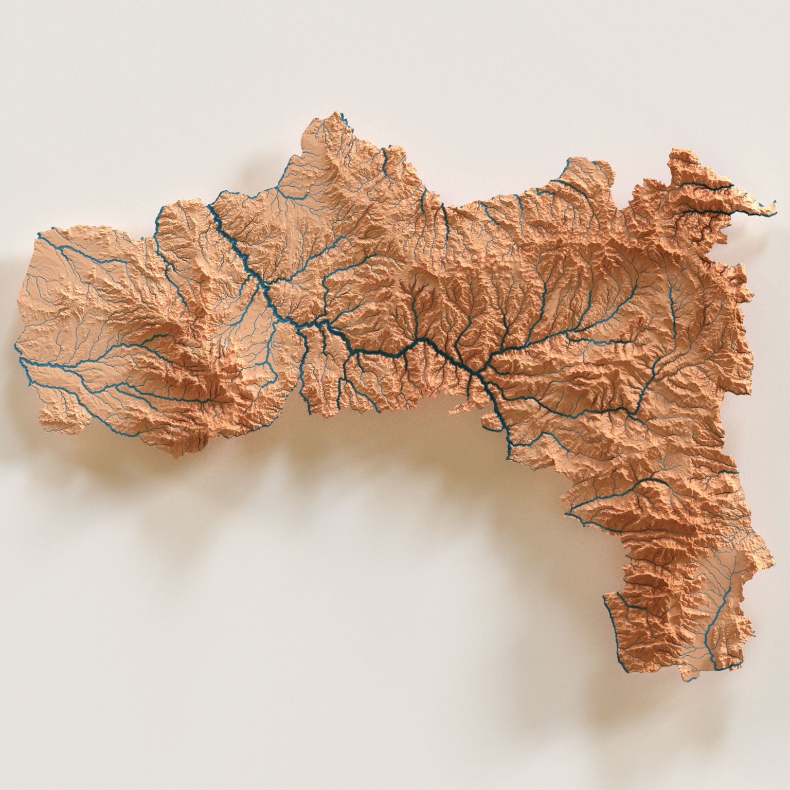
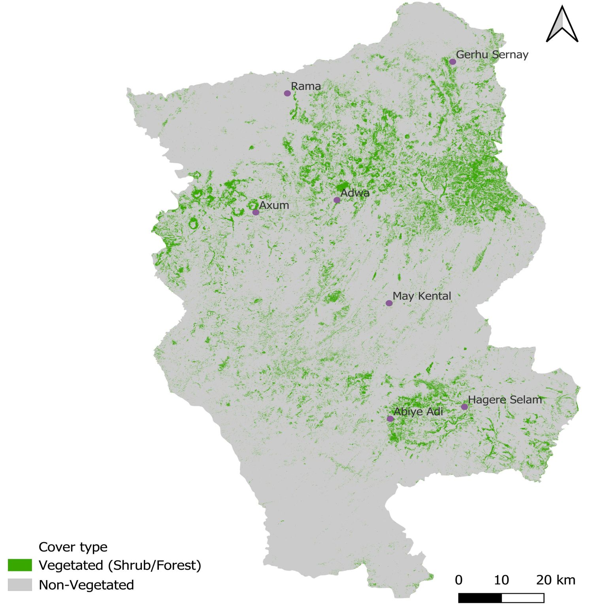

Explore our collection of thematic and 3D maps from different parts of Ethiopia. Click an image to enlarge and learn more.
3D visualization of canopy height model for Addis Ababa.
A 3D height map was created for a section of Addis Ababa by subtracting the Digital Terrain Model (DTM) from the Digital Surface Model (DSM), both derived from LiDAR point clouds.
LiDAR provides high-resolution data, capturing precise distances of surface features from the ground. In the visualization, building heights are represented with a color gradient:
light gray or white for ground level, followed by brown, orange, and purple for the tallest structures.
In the zoomed in image, green for ground level, followed by blue, yellow, and red for the tallest structures. The Commercial Bank of Ethiopia (CBE) building, the tallest in East Africa,
is highlighted in red, standing prominently among surrounding buildings as shown in the zoomed in image.High-resolution DSM and DTM data are essential for a range of urban applications,
including mapping tree canopies, monitoring infrastructure, assessing flood risks, optimizing road networks, and supporting sustainable urban planning. Despite its advantages, LiDAR data
remain limited in Ethiopia due to high costs.
While large-scale LiDAR surveys may be financially challenging, making such data available for major cities could significantly enhance urban planning and development efforts.
Tree patches and green areas of Mekelle city.
Urban trees play a vital role in regulating city temperatures, improving air quality, and enhancing residents’ well-being.
Integrating trees and green spaces into urban planning is essential for fostering healthier and more sustainable cities.
This map visualizes trees taller than one meter along with other green areas in Mekelle city, Tigray, Ethiopia.
Such high-resolution mapping provides valuable insights for urban planners, helping guide the development of
green infrastructure and optimize the distribution of vegetation across the city. Notably, the visualization highlights that
most of Mekelle’s trees are concentrated along waterways, underlining the relationship between urban greenery and natural watercourses.
2023 Land Cover Classification for Addis Ababa.
3D land cover maps offer a more realistic visualization of the study area compared to traditional 2D maps.
While 3D representations may not yet be practical for routine quantitative analysis, they provide valuable
insights into landform characteristics and the spatial distribution of land cover classes across varied terrain.
For 2023, the 3D land cover map of Addis Ababa and its surrounding districts shows that trees are largely confined to
mountainous areas, whereas cropland and built-up areas dominate flat and gently sloping landscapes.
Built-up areas are noticeably expanding, often encroaching on croplands, while some rangelands have transitioned
into cropland, tree cover, or built-up zones. The inclusion of a highway road network highlights the pattern of
urban and suburban development along major roadways extending outward from the city. Incorporating 3D maps into
land cover or elevation analyses enhances visualization and provides insights that are not fully captured in 2D representations.
Road network map of Addis Ababa.
This map presents the road network of Addis Ababa, Ethiopia, generated using data from OpenStreetMap and processed in Jupyter Notebook.
The visualization distinguishes between different types of roads: primary and major roads are depicted with greater width, emphasizing the main transport arteries, while
residential and minor roads are shown thinner, highlighting the finer details of the city’s street layout. This representation provides a clear overview of Addis Ababa’s urban connectivity
and infrastructure, supporting urban planning, transportation analysis, and spatial studies.

3D River network of Tigray Region.
This 3D elevation map of Tigray, located in northern Ethiopia, showcases the region’s distinctive and rugged topography.
The map highlights the intricate network of rivers that traverse the mountainous terrain, emphasizing how these natural features shape the landscape.
By visualizing elevation in three dimensions, the map provides a deeper understanding of the region’s geographic complexity and scenic beauty, offering
valuable insights for environmental studies, land-use planning, and geographic education.
Canopy height model of Southern Tigray.
Canopy height is a fundamental parameter for understanding forest structure and biomass production,
both of which are critical for environmental research. This map presents a detailed canopy height model of Southern Tigray, Ethiopia, at a 10-meter resolution,
generated using Datashader. It prominently highlights the Hugumbrda Forest, one of Ethiopia’s dry Afromontane forests.
The underlying dataset is globally available for the year 2020 at 10-meter resolution, providing a valuable resource for researchers studying
forest vertical structure, biomass estimation, and related ecological processes.
3D land cover map of Southern Tigray.
Traditional land cover maps are typically limited to a horizontal view, overlooking the influence of terrain on land cover patterns.
The 2023 3D land cover map of Southern Tigray, Ethiopia, combines elevation data to illustrate how terrain shapes the distribution of land cover.
The map shows that croplands and built-up areas are concentrated on flatter terrains, while trees and rangelands are more common in rugged landscapes.
Integrating 3D land cover maps into planning processes can support smarter, more sustainable decision-making. Such visualizations are valuable for land-use planners,
policymakers, and other stakeholders pursuing environmentally responsible and climate-resilient development.

Central Tigray Vegetation Cover.
This map illustrates vegetation coverage in the Central Zone of Tigray, Ethiopia, based on unsupervised classification of Sentinel-2 imagery.
Pixels were initially clustered into five classes and subsequently reclassified into vegetated and non-vegetated areas, providing a clear overview
of the region’s green coverage